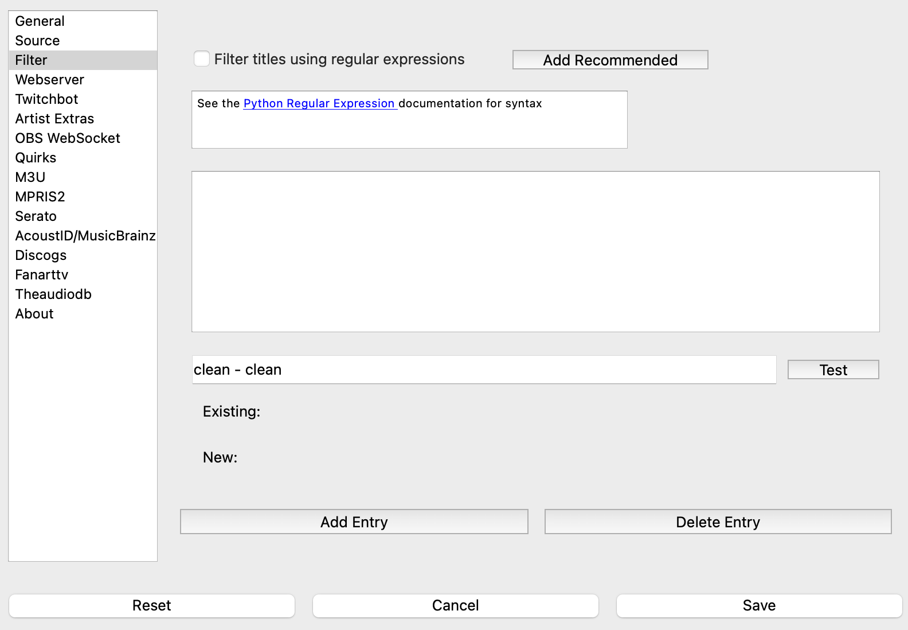
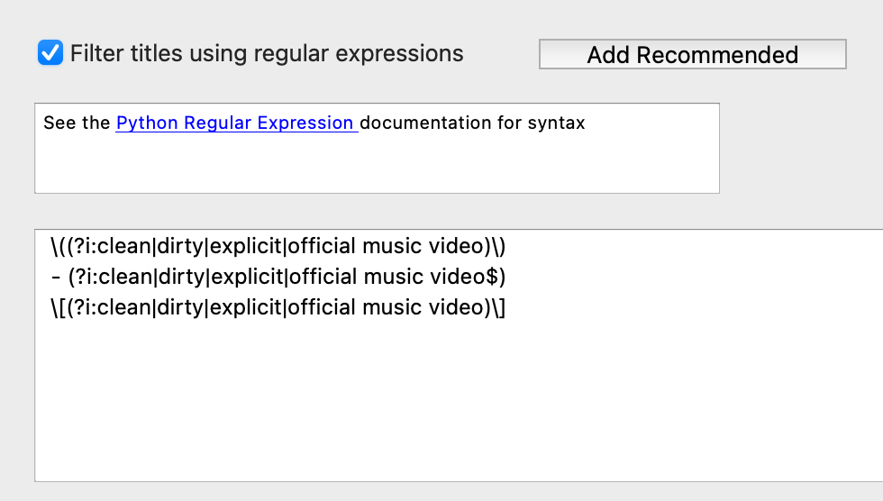

Filter¶
{kind=link}
Some DJ Pools add extra identifiers to track titles. What’s Now Playing has the ability to remove extra text from the title of a track using Python-style regular expressions .
Adding Your Rules¶
Your custom rules may be added by:
Click the Add Entry button
Click on the ‘new’ entry
Edit to be a regular expression
To delete an existing entry:
Select the entry in the list
Click Delete Entry
The order in which the rules are applied are done in the same order as presented in the list. To change the order, select the entry and drag it to the location in the list.
Testing Your Rules¶
The text line below the ruleset may be used to test the rules.
Place your text in the ‘clean - clean’ line.
Click the Test button
The software will then show wbat happens will the rules defined in Settings and the rules as previously saved.
Recommended¶
Previous versions had some built-in rules to remove a few common entries. Clicking on the ‘Add Recommended’ button will add those rules:
{kind=link}
‘ (Clean)’, ‘ (clean)’, and all other variations of case like ‘ (ClEaN)’
At the end of the line: ‘ - clean’, ‘ - Clean’ and similarly is case insensitive
‘ [Clean]’ and ‘ [clean]’ and smiliarly is case insensitive
They will also remove the same types of variations of:
explicit
dirty
official music video